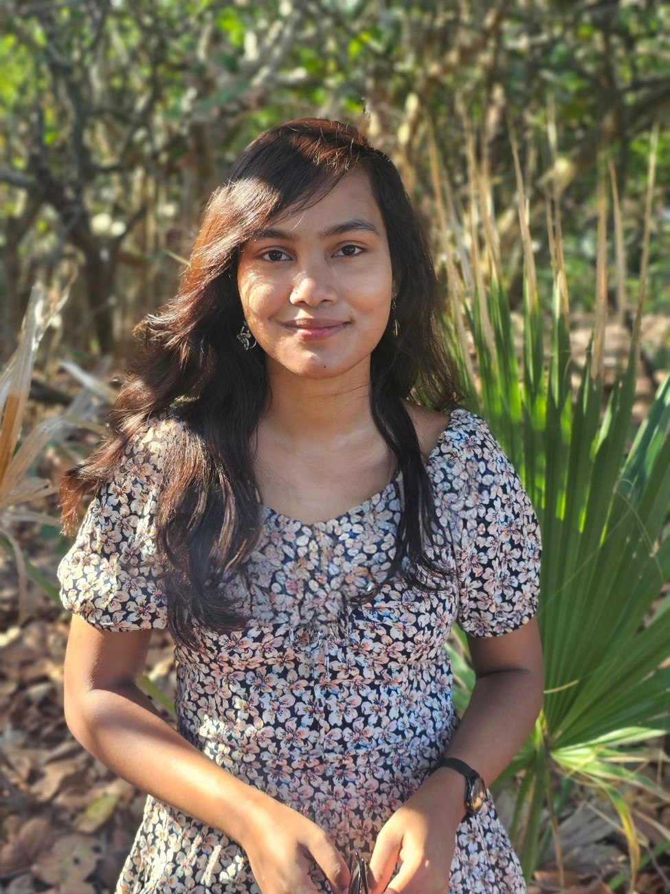
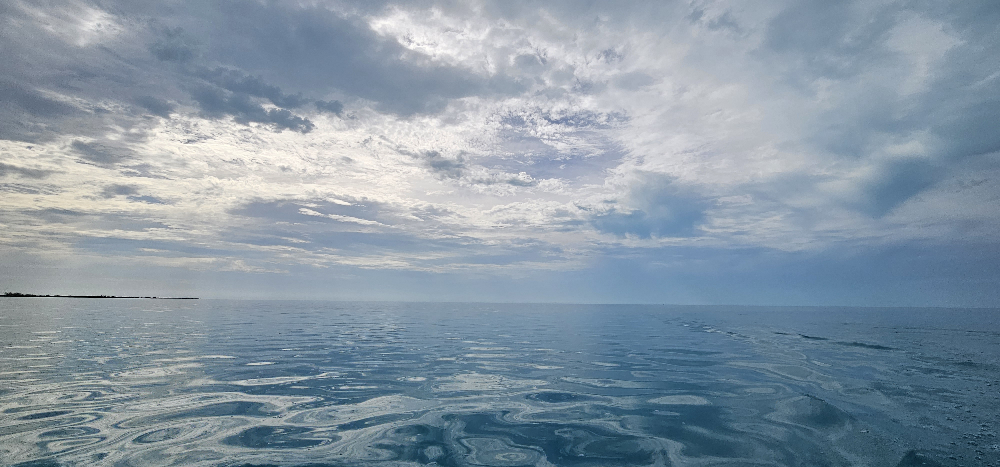

Convection, moisture organization, and tropical atmospheric dynamics.
I am a PhD student in Meteorology and Physical Oceanography at the Rosenstiel School of Marine, Atmospheric, and Earth Science. My work focuses on persistent high-column water vapor “vapor lakes,” moisture budgets, and the dynamics of organized tropical convection.

Current research themes
My work sits at the intersection of tropical meteorology, moist dynamics, and data-driven process analysis.
Vapor lakes
Persistent high-CWV features over the western equatorial Indian Ocean, their maintenance, motion, and regional rainfall impacts.
Boundary-relative budgets
Diagnosing moisture tendencies near moving moisture contours using normal motion, advection, and precipitation–evaporation balance.
Convection and organization
Understanding how tropical convection organizes in space and time, from local moist processes to larger-scale circulation impacts.
Featured project
A central part of my PhD work examines how persistent moist features evolve, why they survive despite rainout, and whether their margins are primarily advected or actively propagated.

Understanding persistent high-CWV “vapor lakes”
I use reanalysis and satellite datasets to identify long-lived moist features, track their geometry and motion, and interpret their evolution using vertically integrated moisture budgets.
- Tracking high-column water vapor features over the western equatorial Indian Ocean
- Relating boundary motion to moisture tendencies and fluxes
- Studying links to precipitation structure and East African rainfall
About
I previously completed a BS-MS at the Indian Institute of Science Education and Research, Pune, where I worked on satellite-based analysis of tropical deep convection. My broader interests include moist dynamical processes, convective organization, and atmosphere–climate interactions.
Contact
The best way to reach me is by email. You can also use this site to access my CV and research materials.